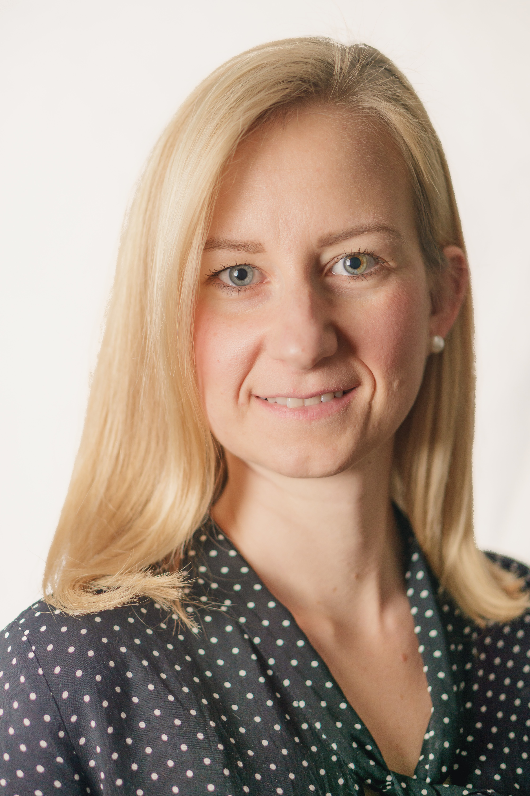

Team
Core Team

Dr Borbála Hunyadi
Principal Investigator
Associate professor, expert in signal processing for brain disorders.

Dr Isabell Lehmann
Senior Researcher
Postdoctoral fellow developing data fusion methods for neuroimaging.

Helena Puente Díaz
PhD candidate
Neuroengineer specializing in physiological signal processing.
Affiliated Researchers
Justyna Gula
PhD Candidate (co-supervised)
Maastricht University, Department of Radiology
Sofia-Eirini Kotti
PhD Candidate
TU Delft, Signal Processing Systems Group